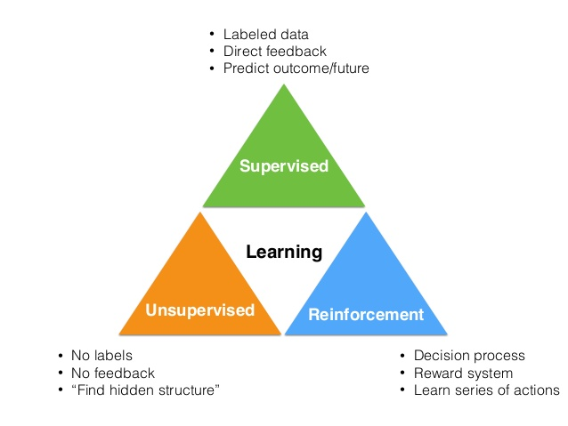
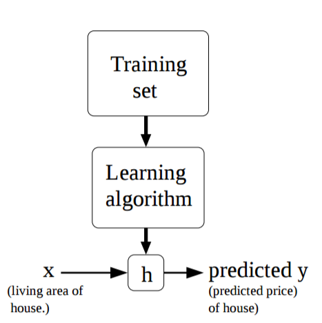

Machine Learning
May 18, 2017
TOC ¶
Introduction ¶
Machine learning (from wikipedia ) is the subfield of computer science that, according to Arthur Samuel in 1959, gives "computers the ability to learn without being explicitly programmed." Here learning means recognizing and understanding the input data then can make predictions on data.
In this series of blogs, I would like to share with you a practical introduction to machine learning and statistical pattern recognition. This covers the three categories of machine learning

Supervised learning ¶
Supervised learning (from wikipedia ) is the machine learning task of inferring a function from labeled training data. For example
-
given a training data contains the living areas and prices of some houses, we want to learn to predict the price of other houses in function of their living area.
-
given a training data contains emails and their labels (spam/non-spam), we want to learn to predict whether new incoming email is spam/non-spam
Let's define some notation for future use
-
$x^{(i)}\in\mathcal{X}$ denote the
inputvariables, also called input features -
$y^{(i)}\in\mathcal{Y}$ denote the
outputor target variable that we want to predict - a pair $(x^{(i)}, y^{(i)})$ is called a training example
- a list of $(x^{(i)}, y^{(i)}),i=1,\ldots,m$ is called a training set
Our goal, given a training set, is to learn a function $h:\mathcal{X}\mapsto\mathcal{Y}$ so that $h(x)$ is a "good" predictor for the corresponding value of $y$. For historical reason, this function $h$ is call a hypothesis . The process is illustrated like this

The standard appoach to supervised learning problems is
- pick a representation for hypothesis function $h$
- pick a loss function $L(h(x), y)$ that we will minimize
The supervised learning can divided into two categories
- when the target $y$ is continuous (e.g house price), we call it a regression problem
- when the target $y$ can only take discrete values (e.g spam/non-spam), we call it a classification problem
Linear regression ¶
Let's consider the case $\mathcal{X}=\mathbb{R}^D, \mathcal{Y}=\mathbb{R}$ and a linear representation of the input for our hypothesis
$$ h(x,\theta) = \theta_0 + \theta_1 x_1 +\ldots+\theta_Dx_D $$Then we pick least-square error as loss function
$$ J(\theta) = \frac{1}{2}\sum_{i=1}^m \left(h(x^{(i)},\theta) - y^{(i)}\right)^2 $$The linear regression is discussed in the following notebooks
-
Linear regression
part 1
which covers
- probabilistic interpretation: maximum-likelihood (ML)
- iterative first order optimization algorithm: gradient descent
-
Linear regression
part 2
which covers
- the normal equation: closed form for linear regression
- parameter regularization: Bayesian view and maximum-a-posteriori (MAP)
Unsupervised learning ¶
Unsupervised learning (from wikipedia is the machine learning task of inferring a function to describe hidden structure from "unlabeled" data.
Approaches to unsupervised learning include:
-
clustering
- k-means
-
Neural Networks
- Restricted Boltzmann Machine
Restricted Boltzmann Machine ¶
Restricted Boltzman Machine (RBM) is energy-based model which consists of a layer of visible units and a layer of hidden units with no visible-visible or hidden-hidden connections.
The implementation of RBMs is done in here which covers
- Introduction to Restricted Boltzmann Machine (RBM)
- RBM feature learning to aplly in MNIST classification task